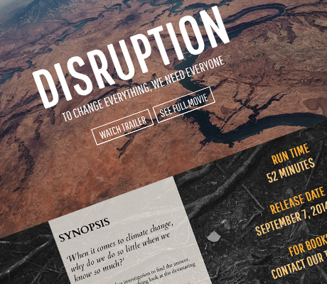
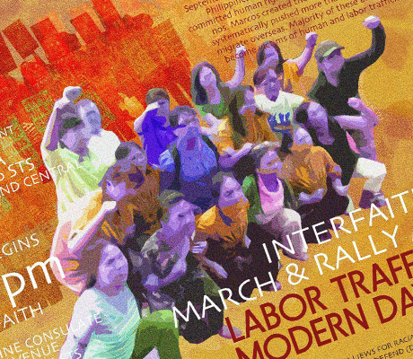
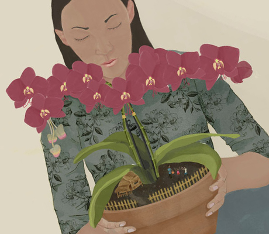

WEB
DEVELOPMENT
DISRUPTION DOCUMENTARY WEBSITE
PERSCHOLAS CASE STUDY
For our first project in PerScholas we have a task to make a promo website for a movie, person or organzation that we choose. I decided to make a website for the documentary film Disruption.
GRAPHIC
DESIGN
INTERFAITH VIGIL POSTER
DAMAYAN MIGRANT WORKERS
I created a poster for a grassroots non-profit domestic worker organization in New York. This poster is for a vigil that is organized by different interfaith organizations in the city for their campaign against labor trafficking and modern day slavery.


ILLUSTRATION
A NOTION OF HOME DOCUMENTARY POSTER
KICKSTARTER CAMPAIGN
This is my last project in 2017 before i studied web development in Per Scholas and General Assembly. It;s a Kickstarter Campaign about a Filipina domestic worker mother that constructs home in the interstices, through magical Philippine folktales and apartment gardening